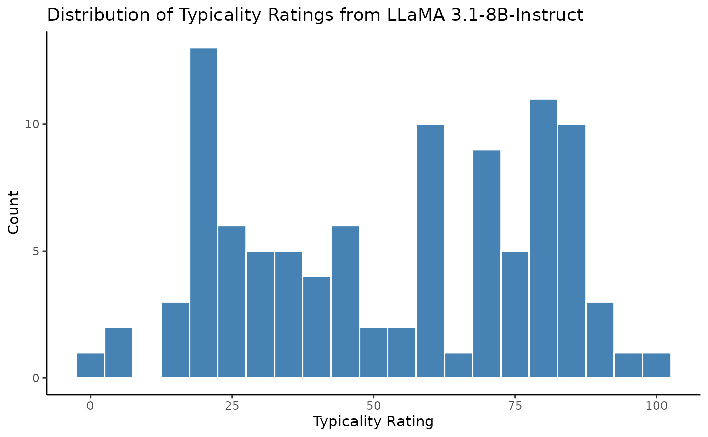
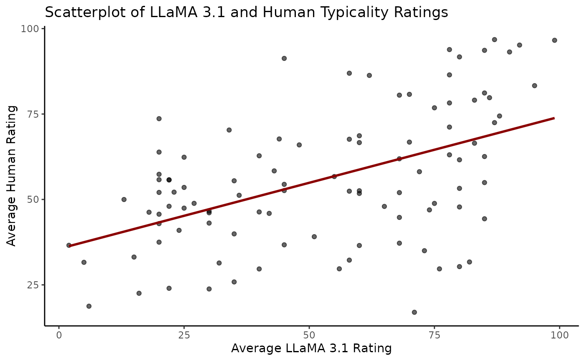
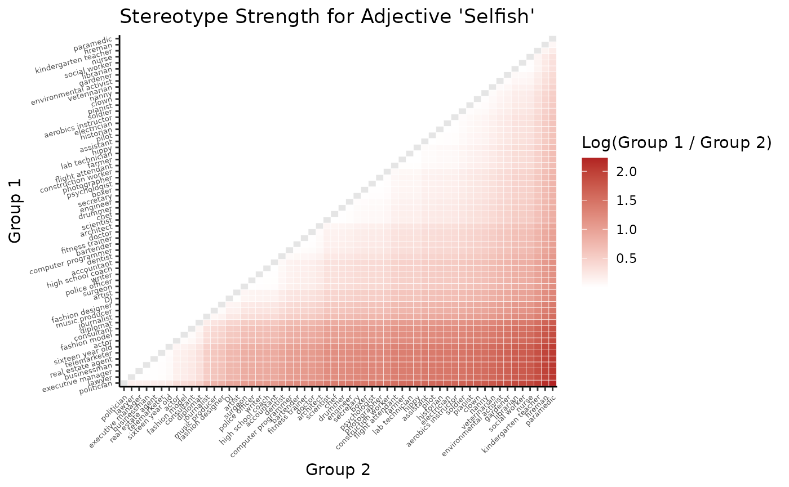

Introduction-to-the-baserater-package.RmdThe baserater package allows you to:
It is designed to streamline the creation of base-rate neglect items for reasoning experiments. You can use it to generate new typicality ratings with any LLM on the Hugging Face platform using your own prompts and parameters, benchmark these ratings against human data, and construct a base-rate item dataset from the generated scores.
To learn more about the theoretical framework and validation studies
underlying the baserater package, see the paper: Using
Large Language Models to Estimate Belief Strength in Reasoning
(Beucler et al., Forthcoming).
You can begin by downloading the article datasets using
download_data().
Use download_data() to retrieve either: - The full
base-rate item database (from GPT-4 and LLaMA 3.3); - The validation
ratings, which include human typicality scores and those generated by
GPT-4 and LLaMA 3.3 on 100 group–adjective pairs. - The two typicality
matrices (from GPT-4 and LLaMA 3.3) that were used to generate the
base-rate item database.
# Load the base-rate database
database <- download_data("database")
# Load the typicality validation ratings
ratings <- download_data("validation_ratings")
# Load the typicality matrices
gpt4_matrix <- download_data("typicality_matrix_gpt4")
llama3_3_matrix <- download_data("typicality_matrix_llama3.3")You can generate new typicality ratings using a Hugging Face-hosted
language model via generate_typicality(). Note that this is
an experimental feature, as it depends on API and model compatibility.
See the Hugging Face Resources
section at the end of this vignette for more information on how to set
up your Hugging Face account and API token.
The function works by sending structured prompts to a large language model and parsing numeric outputs (between 0 and 100) that reflect how well a description (e.g., an adjective) fits a given group. By default, the function uses the same prompt and generation parameters described in the paper.
Here is an example of how the function call might look:
# Original prompt from the paper
original_system_prompt_content <- "You are expert at accurately reproducing the stereotypical associations humans make, in order to annotate data for experiments. Your focus is to capture common societal perceptions and stereotypes, rather than factual attributes of the groups, even when they are negative or unfounded."
original_user_prompt_content_template <- 'Rate how well the adjective "{description}" reflects the prototypical member of the group "{group}" on a scale from 0 ("Not at all") to 100 ("Extremely").
To clarify, consider the following examples:
1. "Rate how well the adjective "FUNNY" reflects the prototypical member of the group "CLOWN" on a scale from 0 (Not at all) to 100 (Extremely)." A high rating is expected because the adjective "FUNNY" closely aligns with the typical characteristics of a "CLOWN".
2. "Rate how well the adjective "FEARFUL" reflects the prototypical member of the group "FIREFIGHTER" on a scale from 0 (Not at all) to 100 (Extremely)." A low rating is expected because the adjective "FEARFUL" diverges significantly from the typical characteristics of a "FIREFIGHTER".
3. "Rate how well the adjective "PATIENT" reflects the prototypical member of the group "ENGINEER" on a scale from 0 (Not at all) to 100 (Extremely)." A mid-scale rating is expected because the adjective "PATIENT" neither closely aligns nor diverges significantly from the typical characteristics of an "ENGINEER".
Your response should be a single score between 0 and 100, with no additional text, letters, or symbols included.'
# Llama 3 Formatted Prompts
# see https://www.llama.com/docs/model-cards-and-prompt-formats/llama3_1/
# These special tags are required for models in the LLaMA 3 family
llama3_system_prompt <- paste0(
"<|begin_of_text|>",
"<|start_header_id|>system<|end_header_id|>\n\n",
original_system_prompt_content,
"\n<|eot_id|>"
)
llama3_user_prompt_template <- paste0(
"<|start_header_id|>user<|end_header_id|>\n\n",
original_user_prompt_content_template,
"\n<|eot_id|>",
"<|start_header_id|>assistant<|end_header_id|>\n\n"
)
# Example using the validation ratings
groups <- ratings$group
descriptions <- ratings$adjective
hf_token = "YOUR TOKEN HERE" # default = Sys.getenv("HF_API_TOKEN")
new_scores <- generate_typicality(
groups = groups,
descriptions = descriptions,
model = "meta-llama/Llama-3.1-8B-Instruct",
hf_token = hf_token,
system_prompt = llama3_system_prompt,
user_prompt_template = llama3_user_prompt_template,
n = 3, # number of responses to generate
min_valid = 2, # minimum number of valid responses, we take the average
max_tokens = 3, # for numeric output between 0 and 100
retries = 1,
matrix = FALSE,
return_raw_scores = TRUE,
return_full_responses = TRUE,
verbose = TRUE
)Here is what the output would look like. Note that we also get the
occasional error messages from the Hugging Face API since we set
return_full_responses to TRUE.
| group | description | mean_score | raw_scores | full_responses |
|---|---|---|---|---|
| DJ | naive | 56 | 56, 56, 56 | 56, 56, 56 |
| accountant | solitary | 58 | 58, 58, 58 | 58, 58, 58 |
| actor | altruistic | 74 | 74, 74, 74 | 74, 74, 74 |
| aerobics instructor | impulsive | 42 | 42, 42 | API_CALL_ERROR: Error in
httr2::req_perform(httr2::req_retry(httr2::req_timeout(httr2::req_body_json(httr2::req_headers(httr2::request(url),
: Failed to perform HTTP request.
[1mCaused by error in
curl::curl_fetch_memory():
[22m
[33m!
[39m Timeout was
reached [api-inference.huggingface.co]: Operation timed out after 60002
milliseconds with 0 bytes received , 42 , 42 |
| architect | charismatic | 22 | 22, 22, 22 | 22, 22, 22 |
| architect | reserved | 85 | 85, 85, 85 | 85, 85, 85 |
We can also look at the distribution of the new typicality ratings generated by LLaMA 3.1-8B-Instruct:
# Distribution of new typicality ratings
ggplot(new_scores, aes(x = mean_score)) +
geom_histogram(binwidth = 5, fill = "steelblue", color = "white") +
labs(
title = "Distribution of Typicality Ratings from LLaMA 3.1-8B-Instruct",
x = "Typicality Rating",
y = "Count"
) +
theme_classic()
The generate_typicality() function supports two
modes:
matrix = TRUE (default): Computes a cross-product of
unique groups and descriptions. Returns a list with matrices of scores
and responses.matrix = FALSE: Computes row-by-row scores for the
group–adjective pairs you supply. Returns a tibble.See ?generate_typicality for full documentation and
customization options.
You can then assess how well a new model or scoring method captures group–adjective typicality by comparing your ratings to the human ground truth and benchmark models (GPT-4 and LLaMA 3.3).
To do that, you need typicality ratings for the 100 validation items
stored in a data frame with three columns: group, adjective, and rating.
We will use the new_scores data frame we generated
earlier.
# Create a data frame with the same structure as the validation set
new_scores = new_scores %>%
mutate(adjective = description,
rating = mean_score) %>%
select(group, adjective, rating)
knitr::kable(head(new_scores))| group | adjective | rating |
|---|---|---|
| DJ | naive | 56 |
| accountant | solitary | 58 |
| actor | altruistic | 74 |
| aerobics instructor | impulsive | 42 |
| architect | charismatic | 22 |
| architect | reserved | 85 |
First, let’s examine the correlation between the new scores and the human ratings visually:
# Join human and model scores
comparison_df <- left_join(
ratings %>% select(group, adjective, human = mean_human_rating),
new_scores,
by = c("group", "adjective")
)
# Scatterplot
ggplot(comparison_df, aes(x = rating, y = human)) +
geom_point(alpha = 0.6) +
geom_smooth(method = "lm", se = FALSE, color = "darkred") +
labs(
title = "Scatterplot of LLaMA 3.1 and Human Typicality Ratings",
y = "Average Human Rating",
x = "Average LLaMA 3.1 Rating"
) +
theme_classic()
Use evaluate_external_ratings() to compute correlations
and display comparisons with our LLMs baseline:
# Print correlation summary with human ground truth and baselines
knitr::kable(evaluate_external_ratings(new_scores))| model | r | p |
|---|---|---|
| external | 0.5049062 | 1e-07 |
| mean_gpt4_rating | 0.8848219 | 0e+00 |
| mean_llama3_rating | 0.8179981 | 0e+00 |
# Optionally store the output in a variable
results <- evaluate_external_ratings(new_scores)As you can see, the smaller and older Llama-3.1-8B-Instruct does not perform as our baseline models (GPT-4 and LLaMA 3.3-70B).
To compute stereotype strength using
extract_base_rate_items(), you’ll need a typicality
matrix—a table of scores where rows correspond to groups and columns
correspond to descriptions (e.g., adjectives). Each cell represents how
typical a description is for a group.
For example, you can load the GPT-4 typicality matrix using download_data() (the same is available for LLaMA 3.3):
#' The typicality matrix from GPT-4 is a data frame with group–adjective pairs and their typicality scores
gpt4_matrix <- download_data("typicality_matrix_gpt4")
knitr::kable(head(gpt4_matrix))| X | intelligent | arrogant | nerdy | kind | loud | careful | argumentative | persuasive | immature | active | funny | disorganized | dishonest | gentle | sensitive | creative | helpful | strong | brave | bossy | unconventional | quiet | organized | reliable | ambitious | charming | confident | efficient | friendly | generous | naive | witty | empathetic | stubborn | trustworthy | meticulous | inventive | charismatic | reserved | altruistic | original | impulsive | zealous | rational | idealistic | conservative | solitary | passionate | adventurous | cautious | extravagant | jovial | cooperative | attractive | muscular | shy | social | warm | moody | lazy | hardworking | imaginative | narrow.minded | boring | selfish | narcissistic |
|---|---|---|---|---|---|---|---|---|---|---|---|---|---|---|---|---|---|---|---|---|---|---|---|---|---|---|---|---|---|---|---|---|---|---|---|---|---|---|---|---|---|---|---|---|---|---|---|---|---|---|---|---|---|---|---|---|---|---|---|---|---|---|---|---|---|---|
| farmer | 55.00 | 15.20 | 11.6 | 75.32 | 13.8 | 84.04 | 21.20 | 25.6 | 12.60 | 88.20 | 22.4 | 20.6 | 14.20 | 63.08 | 34.80 | 38.80 | 80.00 | 88.0 | 70.60 | 19.80 | 20.8 | 71.40 | 83.8 | 85.44 | 50.40 | 33.6 | 74.60 | 79.32 | 79.60 | 65.6 | 28.80 | 29.6 | 48.80 | 71.80 | 84.4 | 71.00 | 53.40 | 28.4 | 67.8 | 62.60 | 37.2 | 19.60 | 51.6 | 76.80 | 34.60 | 80.60 | 74.80 | 75.2 | 31.60 | 77.80 | 10.0 | 61.40 | 79.4 | 31.00 | 78.0 | 26.40 | 33.20 | 70.40 | 22.20 | 10.20 | 91.00 | 32.6 | 36.24 | 38.00 | 17.80 | 10.20 |
| computer programmer | 90.28 | 57.80 | 85.2 | 42.20 | 13.4 | 84.40 | 30.20 | 33.4 | 32.96 | 28.40 | 25.0 | 35.0 | 19.20 | 37.08 | 33.00 | 74.00 | 54.80 | 25.8 | 22.60 | 21.40 | 71.2 | 76.20 | 82.2 | 83.00 | 81.00 | 26.4 | 69.20 | 86.16 | 42.28 | 35.4 | 19.60 | 42.8 | 33.20 | 66.00 | 70.2 | 84.60 | 85.92 | 26.6 | 79.2 | 30.80 | 72.6 | 20.60 | 73.4 | 86.52 | 33.00 | 36.20 | 80.00 | 75.6 | 26.20 | 76.60 | 15.6 | 22.20 | 51.8 | 28.40 | 14.8 | 74.68 | 32.00 | 24.32 | 43.20 | 26.80 | 85.00 | 70.4 | 29.40 | 66.40 | 25.20 | 24.60 |
| flight attendant | 50.20 | 27.68 | 11.4 | 84.00 | 21.2 | 83.92 | 20.72 | 39.0 | 15.60 | 84.44 | 30.8 | 16.6 | 15.40 | 77.00 | 73.32 | 30.80 | 86.88 | 34.4 | 40.72 | 36.60 | 26.0 | 31.00 | 87.8 | 82.80 | 36.20 | 75.0 | 82.80 | 82.40 | 85.40 | 48.2 | 17.72 | 49.0 | 77.20 | 20.60 | 81.8 | 80.40 | 24.00 | 73.4 | 30.4 | 59.04 | 24.2 | 21.32 | 56.6 | 69.40 | 21.20 | 29.80 | 14.00 | 58.2 | 70.28 | 73.96 | 19.0 | 74.08 | 86.0 | 79.60 | 18.4 | 18.20 | 85.60 | 78.20 | 30.40 | 15.00 | 86.60 | 26.4 | 16.00 | 19.72 | 18.08 | 21.60 |
| high school coach | 63.60 | 64.20 | 14.4 | 64.40 | 75.2 | 74.68 | 64.20 | 83.4 | 20.52 | 88.40 | 40.8 | 29.8 | 27.16 | 36.40 | 35.32 | 56.40 | 85.20 | 86.0 | 71.00 | 79.68 | 26.8 | 23.52 | 79.0 | 78.60 | 79.44 | 39.8 | 85.08 | 69.80 | 74.44 | 64.8 | 19.60 | 42.2 | 65.20 | 72.60 | 75.2 | 61.80 | 49.40 | 76.0 | 29.6 | 70.08 | 38.4 | 36.40 | 81.6 | 73.40 | 54.24 | 69.00 | 20.00 | 86.6 | 61.60 | 70.80 | 16.8 | 71.00 | 79.8 | 40.72 | 81.4 | 17.00 | 77.52 | 64.48 | 32.72 | 25.20 | 84.80 | 41.4 | 48.48 | 34.28 | 28.84 | 32.48 |
| dentist | 85.92 | 39.88 | 23.8 | 60.80 | 10.4 | 90.60 | 18.80 | 53.6 | 11.08 | 37.80 | 20.0 | 15.4 | 22.52 | 75.40 | 39.80 | 35.12 | 81.40 | 29.6 | 30.60 | 30.40 | 19.2 | 70.20 | 88.0 | 85.60 | 69.80 | 33.2 | 84.80 | 83.40 | 69.40 | 35.6 | 11.60 | 26.2 | 53.88 | 26.64 | 81.6 | 89.60 | 31.00 | 35.0 | 63.6 | 36.00 | 27.6 | 18.00 | 37.2 | 85.00 | 19.20 | 52.40 | 35.52 | 55.8 | 21.80 | 86.20 | 27.0 | 26.00 | 72.8 | 37.60 | 18.2 | 20.80 | 36.80 | 33.40 | 20.48 | 14.28 | 86.32 | 29.4 | 17.76 | 65.08 | 26.68 | 20.80 |
| lawyer | 85.20 | 74.28 | 33.0 | 33.80 | 39.6 | 83.40 | 83.80 | 88.6 | 18.00 | 73.80 | 20.4 | 20.2 | 69.40 | 26.40 | 29.60 | 43.60 | 47.80 | 68.4 | 33.40 | 70.20 | 22.4 | 26.20 | 86.0 | 64.60 | 87.60 | 35.4 | 87.00 | 74.60 | 36.00 | 31.2 | 14.20 | 69.0 | 32.80 | 70.80 | 42.0 | 83.88 | 46.00 | 69.2 | 40.2 | 28.60 | 39.8 | 25.28 | 74.0 | 84.80 | 27.80 | 61.68 | 34.00 | 70.6 | 30.80 | 83.00 | 66.2 | 20.80 | 47.8 | 41.52 | 16.2 | 18.60 | 63.32 | 22.20 | 30.40 | 19.80 | 85.20 | 37.6 | 31.40 | 62.20 | 71.00 | 67.60 |
Extract base-rate items by applying the function:
#' Extract base-rate items from the typicality matrix
base_rate_items <- extract_base_rate_items(gpt4_matrix)You can then explore or filter the output, e.g., to view the strongest stereotypes:
# View top base-rate items by stereotype strength
knitr::kable(base_rate_items %>%
arrange(desc(StereotypeStrength)) %>%
head(10))| Group1 | Group2 | Description | Score1 | Score2 | StereotypeStrength |
|---|---|---|---|---|---|
| fashion designer | paramedic | extravagant | 82.80 | 8.0 | 2.336987 |
| fashion model | paramedic | extravagant | 79.60 | 8.0 | 2.297573 |
| music producer | paramedic | extravagant | 78.04 | 8.0 | 2.277780 |
| hippy | fitness trainer | lazy | 72.00 | 7.4 | 2.275186 |
| drummer | librarian | loud | 83.60 | 8.6 | 2.274281 |
| politician | fitness trainer | lazy | 71.44 | 7.4 | 2.267378 |
| politician | paramedic | extravagant | 76.00 | 8.0 | 2.251292 |
| DJ | librarian | loud | 81.20 | 8.6 | 2.245153 |
| aerobics instructor | librarian | loud | 80.60 | 8.6 | 2.237736 |
| politician | paramedic | selfish | 83.64 | 9.0 | 2.229297 |
You can also subset the database to focus on a specific adjective or group. For example, you can visualize the stereotype strength of the adjective “selfish” across group combinations:
# Pick one adjective and extract group typicality scores
df <- gpt4_matrix %>%
select(X, selfish) %>%
rename(group = X, score = selfish) %>%
arrange(desc(score)) # sort by how typical the group is
# Save group names and their scores
group_order <- df$group
typ_values <- df$score
names(typ_values) <- df$group
# Build all group pairs and compute log-ratios
res_df <- expand.grid(
g1 = group_order,
g2 = group_order,
KEEP.OUT.ATTRS = FALSE
) %>%
mutate(
typ1 = typ_values[as.character(g1)],
typ2 = typ_values[as.character(g2)],
log_ratio = log(pmax(typ1, 1e-9) / pmax(typ2, 1e-9))
) %>%
mutate(
g1 = factor(g1, levels = group_order),
g2 = factor(g2, levels = group_order)
)
# Keep only pairs where g1 is ranked higher than g2 and log-ratio is positive
res_df <- res_df %>%
filter(as.integer(g1) < as.integer(g2), log_ratio > 0)
# Add identity pairs (g1 == g2) with NA
diag_df <- tibble(
g1 = factor(group_order, levels = group_order),
g2 = factor(group_order, levels = group_order),
log_ratio = NA_real_
)
# Combine with original filtered upper-triangle pairs
res_df <- bind_rows(res_df, diag_df)
# Plot the heatmap
ggplot(res_df, aes(x = g2, y = g1, fill = log_ratio)) +
geom_tile(color = "white") +
scale_fill_gradient2(
low = "steelblue",
mid = "white",
high = "firebrick",
midpoint = 0,
na.value = "grey90",
name = "Log(Group 1 / Group 2)",
) +
labs(
title = "Stereotype Strength for Adjective 'Selfish'",
x = "Group 2",
y = "Group 1"
) +
theme_classic() +
theme(
axis.text.y = element_text(angle = 15, hjust = 1, size = 5),
axis.text.x = element_text(angle = 45, hjust = 1, size = 5),
panel.grid = element_blank()
)
Hugging Face is a platform that provides access to a wide range of
pre-trained models and datasets for natural language processing (NLP)
tasks. The baserater package uses Hugging Face’s API to
generate typicality scores with various models. Here are some useful
resources to get started with Hugging Face:
If you’d like to generate new scores yourself using the
generate_typicality() function, make sure you’ve completed
the following setup steps:
Create a Hugging Face account and generate an API token:
You can either pass it directly to the hf_token argument of
the function, or store it as an environment variable in R (e.g., use
Sys.setenv(HF_API_TOKEN = "your_token")).
Accept the model’s terms of use:
Before using certain models (e.g., LLaMA), you must agree to their
license terms on the Hugging Face Model Hub.
Ensure your prompt matches the model’s expected input
format:
Some models require special formatting, such as instruction tags or
system prompts. Check the model card on Hugging Face for
details.